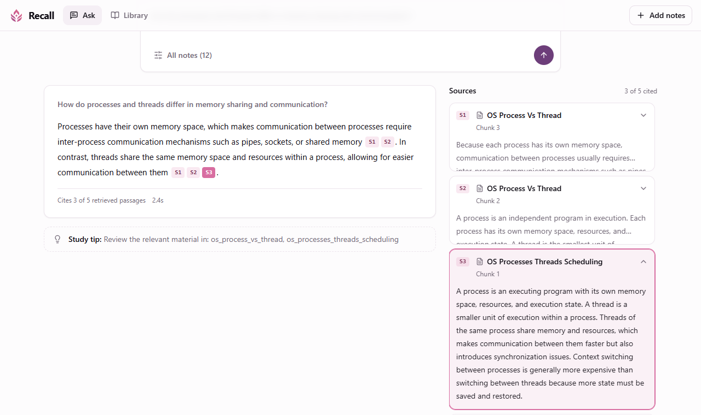

Élève-ingénieure en génie logiciel · IA générative et agents LLMSoftware engineering student · Generative AI and LLM agents
Je conçois des systèmes à base de LLM que l'on peut vérifier : des agents dont les actions sont validées avant d'être exécutées, et des pipelines RAG évalués avant d'être mis en production.I build LLM systems that can be checked: agents whose actions are validated before they run, and RAG pipelines that are evaluated before they ship.
Recherche un stage de fin d'études de 6 mois en IA générative / agentique à partir de février 2027.Looking for a 6-month final-year internship in generative / agentic AI from February 2027.
ProjetsProjects
Agent BPMN avec validation humaineBPMN agent with human approval
Devoteam · 2026
Un agent LangGraph qui modifie des processus d'approvisionnement pharmaceutique modélisés en BPMN à partir de demandes en langage naturel. Le LLM (Qwen3-8B) interprète la demande en sortie structurée ; un moteur déterministe ancre chaque élément sur le modèle réel, produit un plan limité à 5 opérations, et rien n'est exécuté sans approbation humaine. Le résultat est écrit sur une copie puis revalidé.A LangGraph agent that edits pharmaceutical procurement processes modelled in BPMN from natural-language requests. The LLM (Qwen3-8B) turns the request into structured output; a deterministic engine grounds every element in the real model, builds a plan limited to 5 operations, and nothing runs without human approval. The result is written to a copy and validated again.
96tests pytestpytest tests
6paires AS-IS/TO-BE pour évaluer les recommandationsAS-IS/TO-BE pairs to evaluate recommendations
Recall : assistant RAG évaluéRecall: an evaluated RAG assistant
Projet personnel · 2026Personal project · 2026
Un assistant de révision qui répond uniquement à partir des cours de l'étudiant, cite un passage pour chaque affirmation et répond « I don't know » sinon. Recherche hybride vectorielle et BM25 fusionnée par RRF, GPT-4o-mini. Chaque choix a été mesuré : un reranker et un planificateur LLM ont été retirés parce qu'ils n'apportaient rien.A study assistant that answers only from the student's own notes, cites a passage for every claim and says "I don't know" otherwise. Hybrid vector and BM25 retrieval fused with RRF, GPT-4o-mini. Every design choice was measured: a reranker and an LLM planner were removed because they added nothing.

26 % → 95 %de réponses entièrement sourcées par rapport à un prompt standardfully grounded answers vs. a standard prompt
Contributions à Mermaid.jsContributions to Mermaid.js
Open source · 2025 – 2026
Ajout de l'option inheritDir, qui permet aux sous-graphes d'hériter de la direction du graphe parent : implémentation dans le moteur de rendu, schéma de configuration, types et documentation. Plus de 11 PR fusionnées au total, et une invitation à rejoindre l'organisation mermaid-js.Added the inheritDir option, which lets subgraphs inherit the parent graph's direction: implementation in the layout engine, configuration schema, types and documentation. 11+ merged PRs in total, and an invitation to join the mermaid-js organisation.
EchoBloom : émotions vocales pour Unreal Engine 5EchoBloom: speech emotion for Unreal Engine 5
MedTech · 2026
Reconnaissance des émotions dans la voix (Wav2Vec 2.0, SpeechBrain) transformée en timeline horodatée et lissée, qui pilote l'animation faciale d'un MetaHuman via un plugin C++. Prix du meilleur projet étudiant.Speech emotion recognition (Wav2Vec 2.0, SpeechBrain) turned into a smoothed, timestamped timeline that drives a MetaHuman's facial animation through a C++ plugin. Best student project award.
PyTorch · SpeechBrain · FastAPI · Docker · UE5 C++